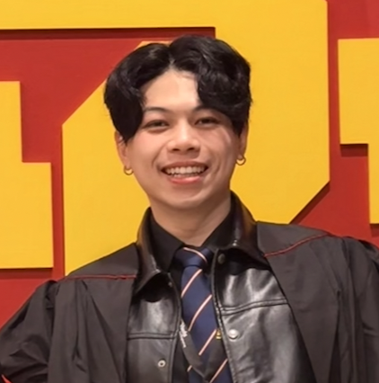

I help robots learn to touch, grasp, and check their own work.
M.S. Computer Science student and researcher at USC's SLURM Lab, working on tactile simulation, world-model policy evaluation, and data pipelines for manipulation.
Projects
Research and course projects, newest first. Open one for details.
Tactile real-to-sim-to-real for dexterous manipulation
SLURM Lab, USC, since Sep 2026 In progress
My elastic-pad sensor model recovers 98% of the applied contact
force in MuJoCo, compared with 22% for MuJoCo's built-in tactile
sensor.
Collecting tactile data on real robots is slow, and tasks like in-hand manipulation are hard to teleoperate. This project builds a calibrated tactile simulator so dexterous policies can be trained with RL in simulation and transferred to the real robot. The platform is an xArm7 with a LEAP hand and PaXini fingertip sensors.
- Designed an elastic-pad model that simulates 127-taxel PaXini fingertips in MuJoCo, following contact shape and push direction and writing the real sensor's output format.
- Benchmarked five sensor models (MuJoCo built-in, binary, Gaussian, center of pressure, and elastic) against real grasping recordings replayed in simulation.
- Traced a 1–2 cm replay error to LEAP hand joint-encoder offsets, making sim-versus-real tactile comparisons reliable.
- Next: calibrate the elastic model with controlled real presses and test whether it improves sim-to-real RL transfer.
- MuJoCo
- Tactile sensing
- LEAP hand
- Python
Hallucination detection for world-model policy evaluation
SLURM Lab, USC, since Aug 2026, targeting RSS 2027
In progress
A 240-pair, 16-task benchmark that tests whether vision-language
models can catch world-model hallucinations before they skew a
policy evaluation.
World models can evaluate robot policies without costly real-robot trials, but they hallucinate, especially on out-of-distribution tasks. We study whether VLMs can flag those failures automatically.
- Generated CTRL-World rollouts of a π0.5 policy on a DROID Franka setup for the benchmark, which spans three camera views.
- Co-building detection pipelines with Qwen3-VL and Molmo2 that compare frame pairs, sliding-window clips, and full videos.
- Using SAM3 masks to focus detection on the task object, targeting object disappearance and shape morphing.
- World models
- VLMs
- SAM3
- PyTorch
Bimanual long-horizon manipulation
Graphen R&D, robotics AI internship, May – Aug 2026
60% real-robot success on a 40-second bimanual pick-and-place
task: one arm holds a basket while the other places items in it.
- Extended a single-arm platform to synchronized dual-arm control and trained a Diffusion Transformer (DiT) imitation policy.
- Doubled demonstration throughput to 50 episodes an hour by building the real-robot collection pipeline for teleoperation, motion capture, and MoCap gloves.
- Removed 200+ invalid episodes, about 20% of collected data, with automated checks for outlier trajectories, frozen frames, timestamp errors, and misaligned action and camera streams.
- Collected 400 simulated episodes in Isaac Lab with domain randomization for VLA post-training of NVIDIA GR00T, and prototyped an NVIDIA Cosmos world-model data pipeline.
- Imitation learning
- VLA
- Isaac Sim
- ROS2
- PyTorch
Parameter merging for continual adaptation in VLA models
USC, Jan – May 2026
Linear averaging across the language backbone and action layers
gave the most reliable balance between learning a new task and
keeping old skills.
Vision-language-action (VLA) policies can learn new manipulation tasks through finetuning, but they often forget skills they already had. We tested parameter merging as a lightweight post-training fix.
- Compared several merging methods and component-level merging choices on a pretrained StarVLA-FAST model, evaluated on the LIBERO benchmark.
- Found that parameter merging is a practical way to adapt VLA policies continually without retraining from scratch.
- VLA
- StarVLA
- LIBERO
- Continual learning
Cross-domain benchmarking of CNNs for visual affordance
University of Washington, Oct – Dec 2025
DeepLabV3+ held up best when affordance segmentation models
moved from real images to synthetic ones.
Affordance segmentation tells a robot which part of an object it can grasp, cut, or contain with. The gap between real and synthetic training data for this task is understudied.
- Benchmarked U-Net, SegNet, and DeepLabV3+ on the real IIT-AFF dataset and measured how they transfer to a synthetic domain.
- All three models lost accuracy on synthetic data; DeepLabV3+ was the most resilient.
- Semantic segmentation
- U-Net
- DeepLabV3+
- Domain gap
Thermal tilt control for CNC machines
Smart Manufacturing Lab, NCUT, Aug 2022 – Aug 2023
Held spindle tilt within ±1 µm, down from a −3 to 4 µm range,
over 8-hour runs on a 3-axis CNC machine.
- Co-developed an MLP that predicts thermal tilt at 0.5 µm RMSE and feeds a MOPSO optimizer that sets target temperatures for closed-loop control.
- Co-built 20 RP2040 wireless temperature sensors on a Bluetooth mesh, replacing wired thermocouples that kept falling off during machining.
- Built the web dashboard for monitoring, model tuning, and data export.
- Machine learning
- Embedded C++
- Bluetooth mesh
Encrypted drone reconnaissance
NCUT, Sep 2021 – Jun 2022
An obstacle-avoiding drone that maps its surroundings and
streams encrypted video to a phone in real time.
- Developed autonomous obstacle avoidance with real-time spatial mapping.
- Streamed AES-encrypted video to a mobile app over Wi-Fi UDP sockets for low latency and long-range transmission.
- Drones
- AES encryption
- UDP networking
Experience and education
Oldest to newest. Scroll to drive the robot from 2019 to now.
-
Sep 2019 – Jun 2023 Education
B.Eng. Computer Science and Information Engineering
National Chin-Yi University of Technology
-
Aug 2022 – Jul 2023 Research
Student Researcher, Smart Manufacturing Lab
National Chin-Yi University of Technology, with Prof. Yu-Chi Liu
-
Aug 2023 – Jul 2025 Work
Software Engineer
Yois, Taipei
-
Sep – Dec 2025 Work
Software Engineer Intern
DoubleSpot, Seattle
-
Jan 2026 – 2027 Education
M.S. Computer Science
University of Southern California, GPA 4.0
-
Jan 2026 – now Research
Student Researcher, SLURM Lab
University of Southern California, with Prof. Daniel Seita
-
May – Aug 2026 Work
Robotics AI Intern
Graphen, Taipei
Tools I use: Python, C++, PyTorch, Isaac Sim and Isaac Lab, MuJoCo, ROS2, imitation learning, VLAs, VLMs, world models, Docker, AWS.

Looking for robot learning roles.
I'm interested in Robotics ML Engineer and Research Engineer positions. The fastest way to reach me is email.